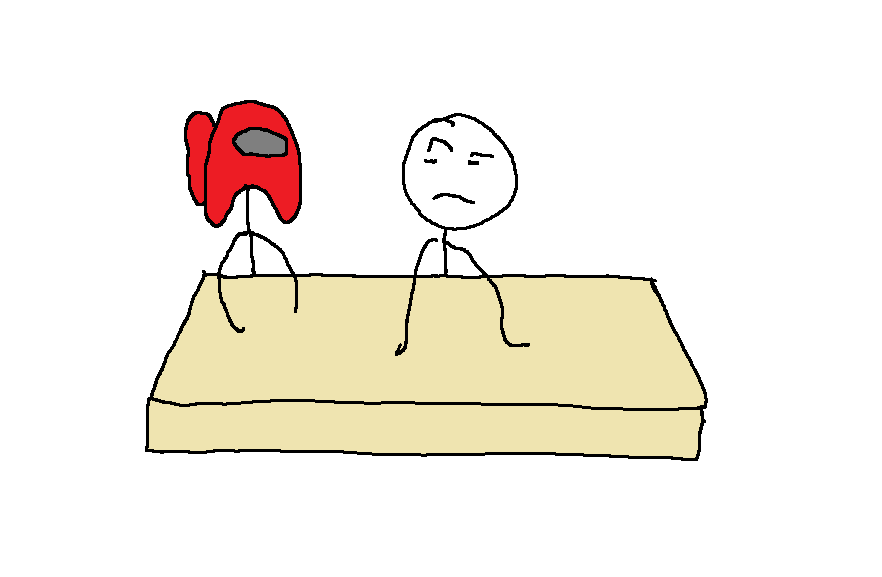

Sus volt Koszinusz ének órán
Nagyon sus volt Koszinusz ének órán. Amikor a tanár megkérdezte, hogy tetszik-e nekünk Özlem, akkor Koszinusz igennel válaszolt. Szinusz az eseményt egyből lejegyezte. Koszinusz a megkérdezésünkre azt mondta, hogy mindenki a háta mögött igennel válaszolt, ezért ő is ezt mondta. Mire rá jött, mire válaszolt, már túl késő volt. Szinusz egyből megjegyezte a válaszát.